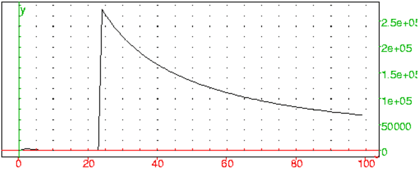

Trois amis sont nès une même annèe de 365 jours.
On suppose que les dates de naissance sont équiprobables.
Quelles sont les probabilités pour que :
1/ Ils soient nés le même jour,
2/ Deux d’entre eux seulement soient nés le même jour,
3/ Ils soient nés a des dates différentes,
4/ Quelle relation vérifie ces trois réponses ?
Solution
On donne un numéro aux amis, i.e. on les ordonne.
Soit Ω l’univers ensemble de triplets de nombres allant de 1 à 365.
Il y a 3653 triplets possibles, donc card(Ω)=3653.
1/ Soit A l’événement "Ils sont tous les trois nés le même jour". cela signifie que
A est composé de triplés formés par 3 nombres égaux donc,
card(A)=365.
Donc, p(A)=365/3653=1/3652≃ 7.5e−06.
2/ Soit B l’événement "Deux seulement sont nés le même jour".
B est composé de triplés formés par 2 nombres égaux et différents
du 3-ième. Il y a trois possibilités (les deux premiers ou les deux
derniers ou le premier et le troisième) ont le même anniversaire donc,
comme il y a 365*364 couples de nombres différents, card(B)=3*365*364.
Donc, p(B)=3*365*364/3653=3*364/3652≃ 0.0082.
3/ Soit C l’événement "Ils sont nés a des dates différentes".
C est composé de triplés formés par 3 nombres différents donc,
comme il y a 365*364*363 triplets formés de 3 nombres différents, on a
card(C)=365*364*363.
Donc, p(C)=365*364*363/3653=364*363/3652≃ 0.99.
4/ On doit avoir p(A)+p(B)+p(C)=1 puisque A,B,C forment une partition de
Ω. on a :
1+3*364+364*363=1+364*366=1+(365−1)(365+1)=3652
donc on a bien : p(A)+p(B)+p(C)=1.
Dans une assemblée de n personnes, toutes sont nèes une annèe de
365 jours.
On suppose que les dates de naissance sont équiprobables.
On note p(n) la probabilité pour que 2 personnes au moins aient leur
anniversaire le même jour.
1/ Calculer p(3),
2/ Donner la formule permettant de calculer p(n),
3/ Déterminer une valeur approchée de p(20), p(30) et p(367),
4/ Déterminer le nombre n pour que l’on ait
p(n)≥ 1/2.
Solution
On donne un numéro aux personnes de l’assemblée, i.e. on les ordonne.
Soit Ω l’univers ensemble des n-uplets de nombres entiers de 1
à 365.
Il y a 365n triplets possibles, donc card(Ω)=365n.
1/ D’après l’exercice précédent, p(3)=p(A)+p(B)=1+3*364/3652≃ 0.0082.
2/ On va tout d’abord chercher la probabilité de l’événement contraire : soit Dn l’événement "Les n personnes ont leurs anniversaires a des dates toutes différentes".
Il y a 365*364*...*365-n+1 triplets formés de nombres différents
deux à deux, donc card(Dn)=365*364*...365−n+1=365!/(365−n)!.
Donc p(Dn)=365!/(365−n)!*365n=364!/(365−n)!*365n−1,
et donc p(n)=1−p(Dn)=(365−n)!*365n−365!/(365−n)!*365n=(365−n)!*365n−1−364!/(365−n)!*365n−1.
Avec Xcas on peut définir p(n) on tape :
p(n):=1-factorial(364)/(factorial(365-n)*365^(n-1))
3/ Calculons avec Xcas, on tape :
evalf(perm(365,19)/365^19)
On obtient :
0.588561616419
donc p(D20)≃ 0.588561616419 et
p(20)≃ (1−0.588561616419) ≃ 0.411438383581
Ou on tape :
evalf(p(20))
On obtient :
0.411438383581
On tape :
evalf(perm(364,22)/365^22)
On obtient :
0.492702765676
donc p(D23)≃ 0.492702765676 et
p(25)≃ (1−0.492702765676) ≃ 0.507297234324
Ou on tape :
evalf(p(23))
On obtient :
0.507297234324
On tape :
evalf(perm(365,29)/365^29)
On obtient :
0.293683757281
donc p(D30)≃ 0.293683757281 et
p(30)≃ (1−0.293683757281) ≃ 0.706316242719
Ou on tape :
evalf(p(30))
On obtient :
0.706316242719
Ce qui veut dire que dans une assemblée de
20 personnes il y a 4 chances sur 10 pour que 2 personnes aient le même
anniversaire, que dans une assemblée de 23 personnes il y a 1 chance sur
2 pour que 2 personnes aient le même anniversaire et que dans une
assemblée de 30 personnes il y a 7 chances sur
10 pour que 2 personnes aient le même anniversaire !!!!
Pour calculer p(367), on n’a pas besoin de Xcas car :
p(367)=1 puisqu’il n’y a que 365 dates possibles (ou 366 ...) parmi
les 367 personnes et donc deux personnes au moins ont forcément le même
anniversaire.
4/ On va utiliser le tableur pour chercher p(20)..p(30), pour cela on tape
dans A0..A10 les valeurs de p(D20)..p(D30) :
=evalf(perm(365,20+Row())/365^(20+Row()))
et dans B0 ..B10 les valeurs de p(20)..p(30) :
=1-A0
Puis, on remplit les colonnes A et B avec ces formules à l’aide
du bouton remplir (option vers le bas).
On rapelle que pour avoir la valeur d’une cellule dans la ligne de commande,
on doit appuyer sur le bouton eval.
On obtient :
B2=0.475695307663 et B3=0.507297234324
donc n=23 car on a :
p(23)=0.507297234324>0.5 et
pour n=22 p(22)=0.475695307663<0.5.
On peut aussi taper dans C0 :
=20+count_inf(0.5,B0:B10)
car on sait que 20<n<30 et que coun_inf(0.5,B0:B10) est la fonction
qui compte le nombre d’éléments stricrement inférieurs à 0.5 dans la
colonne B (de B0 à B10).
On a mis 20 car il a 19+count_inf(0.5,B0:B10) valeurs stricrement
inférieures à 0.5 et donc 20+count_inf(0.5,B0:B10) est la
première valeur supérieure ou égale à 0.5.
On obtient dans C0 :
23
On remarqera que :
B21=0.903151611482
Ce qui veut dire que dans une assemblée de 41 personnes il y a 9 chances sur
10 pour que 2 personnes aient le même anniversaire !!!!
5/ On peut dessiner l’évolution des p(n) en fonction de n lorsque
n varie entre 20 et 50.
Il suffit poir cela de rajouter une colonne entre
A et B on met B0 en surbrillance et on appuie sur
c+. La colonne B devient C, et une colonne B est
créée.
On tape alors 0 dans B0, puis dans B1 on met
=B0+1 puis on remplit la colonne B avec cette formule.
Il suffit maintenant de mettre en surbrillance B0:C30 puis d’ouvrir le
menu 2d et de choisir Scatterplot pour voir les différents
points dans l’écran de géométrie (changer la configuration du
graphique pour voir tous les points).
On considère les 4 dés suivants :
La partie se compose de 12 lancers.
Pour une partie, chacun des joueurs
choisit un dé. À chaque lancer, celui
qui a le meilleur score marque 1 point. La partie se compose de 12 lancers.
On veut simuler ce jeu pour que l’on puisse jouer contre l’ordinateur.
L’ordinateur tire au hasard un dé, vous donne son choix, puis vous
choisisez un parmi les 3 dés qui restent. Puis vous jouez....
Quel dé faut-il choisir pour gagner contre l’ordinateur ?
On numérote les faces de chaque dé : par exemple, par ordre croissant des
points des faces, ainsi pour le dé A les faces 0,1 ont comme
points 0 et les faces 2,3,4,5 ont comme points 4.
Pour jouer avec un dé, on tire au hasard un nombre entier entre 0 et
5 (rand(6)) pour voir sur quelle face tombe le dé, puis on regarde le
nombre de points de cette face. Ce nombre dépend du dé choisi.
On écrit donc une fonction qui renvoie pour chaque dé la valeur de
la face n du dé.
rande(des,n):={
if (des=="A"){if (n==0 or n==1) return 0 ;
else return 4;};
if (des=="B"){if (n==0 or n==1 or n==2) return 1;
else return 5;};
if (des=="C"){if (n==4 or n==5) return 6;
else return 2;};
return 3;
}:;
Puis on écrit le programme qui correspond a une partie (12 lancers pour chacun) et qui renvoie la liste des scores (ordinateur,joueur).
jeuwin0():={
local deo,dem,po,pm,scoro,j;
deo:=char(rand(4)+65);
print("j'ai choisi le de "+ deo);
repeter saisir_chaine("votre choix",dem);
jusqua dem!=deo;
scoro:=0;
for (j:=0;j<12;j++){
po:=rande(deo,rand(6));
pm:=rande(dem,rand(6));
print(po,pm);
if (po>pm) scoro:=scoro+1;
}
return [scoro,12-scoro];
}
:;
On peut aussi utiliser les listes A,B,C,D pour representer chaque dé, et le programme devient beaucoup plus simple (on n’a pas besoin de la fonction rande !!!!) mais il faut transformer le caractère contenu dans deo (par ex "A") en expr(deo) (par ex en la valeur de la variable A). Pour dem on ne saisit plus une chaine mais directement le nom d’une variable avec saisir(dem) au lieu de saisir_chaine(dem).
jeuwin():={
local deo,dem,po,pm,scoro,j,A,B,C,D;
deo:=char(rand(4)+65);
print("j'ai choisi le de "+ deo);
A:=[0,0,4,4,4,4];
B:=[1,1,1,5,5,5];
C:=[2,2,2,2,6,6];
D:=[3,3,3,3,3,3];
deo:=expr(deo);
repeter saisir("votre choix",dem);
jusqua dem!=deo;
scoro:=0;
for (j:=0;j<12;j++){
po:=deo[rand(6)];
pm:=dem[rand(6)];
print(po,pm);
if (po>pm) scoro:=scoro+1;
}
return [scoro,12-scoro];
}
:;
On peut ensuite faire plusieurs parties. On tape :
score:=[0,0];
puis par exemple
score:=score+jewin()
plusieurs fois et on obtient les scores cumulés.
Pour savoir quel dé il faut choisir, on cherche la probabilité que l’ordinateur gagne selon les différents choix :
| P(nA>nB)=(4/6)*(3/6)=1/3 |
| P(nA>nC)=(4/6)*(4/6)=4/9 |
| P(nA>nD)=(4/6)=2/3 |
| P(nB>nC)=(3/6)*(4/6)=1/3 |
| P(nB>nD)=(3/6)=1/2 |
| P(nC>nD)=(2/6)=1/3 |
Remarque
La relation "le dé N1 gagne le dé N2" n’est pas transitive,
en effet:
le dé B gagne le dé A,
le dé C gagne le dé B,
le dé D gagne le dé C,
le dé A gagne le dé D,
De plus, le jeu est trompeur car le choix ne depend pas du score moyen de
chaque dé, en effet :
le dé A fait en moyenne un score de 8/3,
le dé B fait en moyenne un score de 3,
le dé C fait en moyenne un score de 10/3,
le dé D fait en moyenne un score de 3 et pourtant le dé D
l’emporte sur le dé C de moyenne 10/3 mais il perd contre le dé
A qui n’a qu’une moyenne de 8/3 !
Dans un pays, le roi a décidé que les familles de ses sujets doivent avoir
des enfants jusqu’à ce qu’elles aient un garçon.
Quelle est le nombre d’enfants moyen par famille ?
Si X est la variable aléatoire égale au nombre d’enfants dans une famille, on a :
Donc E(X)=∑k=1+∞ k*1/2k
On tape :
sum(k/2^k,k,1,+infinity)
On obtient :
2
Donc le nombre moyen d’enfants est 2....On aurait pu s’en douter car dans
chaque famille il n’y a qu’un seul garçon et comme en moyenne il nait
autant de filles que de garçons, il y aura en moyenne autant de filles que
de garçons, soit 2 enfants en moyenne dans chaque famille.
On tire au hasard des nombres entre 1 et n jusqu’à obtenir 1. Le résultat est alors la somme des nombres obtenus. Quel est la moyenne des résultats obtenus ?
Supposons pour commencer n=2
Les résultats peuvent être : R=1,3,5....2p+1....
On a :
P(R2=1)=1/2,
P(R2=3)=1/22
....
P(R2=2p+1)=1/2p+1
Donc :
E(R2)=∑p=0+∞ (2p+1)1/2p+1
On tape :
sum((2k+1)/2^(k+1),k,0,+infinity)
On obtient :
3
La moyenne de R2 vaut donc 1+2=3.
Peut-on généraliser ?
Dans le cas général, on tire au hasard des nombres entre 1 et n jusqu’à
obtenir 1. La moyenne des sommes des nombres tirés vaut-elle
1+2+...+n=n(n+1)/2 ?
Soit Xn la variable aléatoire égale au nombre de tirages parmi
1...n qu’il faut effectuer pour obtenir 1.
On a :
P(Xn=1)=1/n,
P(Xn=2)=1/n2 et les résultats obtenus peuvent
être :
2+1=3,3+1=4,...,n+1 qui est une liste L2 de taille n−1 et de somme :
2+3+...n+n−1=(n−1)(n+3)/2
P(Xn=3)=1/n3 et les résultats obtenus peuvent
être :
2+2+1=5,2+3+1=6,3+2+1=6,...n+n+1 qui est une liste L3 de taille
(n−1)2
Que vaut la somme de cette liste ?
Chaque terme est la somme de 2 termes et de 1 : dans ces sommes chaque nombre
(2,3,...n) apparaissent autant de fois donc il y a 2(n−1)2/(n−1)=2n−2 fois 2,
2n−2 fois 3...2n−2 fois n et (n−1)2 fois 1. La somme cette liste vaut
donc :
(n−1)2+(2n−2)(2+3+...+n)=(n−1)2+(n−1)2(n+2)=(n−1)2(n+3).
......
P(Xn=p)=1/np et les résultats obtenus peuvent
être : 2+...+2+1=2p−1,2+...+3+1=2p,3+2+...+2+1=2p,... (liste Lp de
taille (n−1)p−1)
Que vaut la somme de cette liste ?
Cette somme est composée de p*(n−1)p−1 termes.
Cette somme est la somme :
de (n−1)p−1 fois 1,
de (p−1)(n−1)p−2 fois 2
....
de (p−1)(n−1)p−2 fois n
donc elle vaut :
(n−1)p−1+(p−1)(n−1)p−2(2+3+...+n)=
(n−1)p−1+(n−1)p−1(p−1)(n+2)/2=(n−1)p−1(1+(p−1)(n+2)/2)=
(n−1)p−1((p(n+2)−n)/2).
Donc :
E(Rn)=∑p=1+∞1/np(n−1)p−1(p(n+2)−n)/2
On tape :
sum((n-1)^(p-1)/n^p*(p*(n+2)-n)/2 ,p,1,+infinity)
On obtient :
(n^2+n)/2
Donc la moyenne de Rn est égale à 1+2+...n
On tape le programme trialea(r,q,p) qui tire au hasard des nombres entre 1 et r. On fait p fois des échantillons de taille q, et on dessine les résultats intermédiaires obtenus : l contient les sommes cumulées des résultats (ici une somme) c’est à dire la somme d’un échantillon de taille n=k+1+j*q avec k=0..q-1 et j=0..p-1. Dans Ldiv on met evalf(l/n) lorsque n=q,2*q...p*q
trialea(r,q,p):={
local j,k,l,n,LdivN,alea;
LdivN:=NULL;
l:=0;
n:=0;
for (j:=0;j<p;j++){
for (k:=0;k<q;k++){
alea:=(rand(r)+1);
while (alea!=1){
l:=l+alea;
alea:=(rand(r)+1);
}
l:=l+1;
n:=n+1;
}
LdivN:=LdivN,evalf(l/n);
}
return LdivN;
}:;
On tape :
L10:=trialea(10,100,10000);
plotlist(L10)
On obtient :

On tire au hasard des nombres entre 1 et n jusqu’à obtenir 1. Le résultat est alors le produits des nombres obtenus. Quel est la moyenne des résultats obtenus ?
Cela ressemble à l’exercice précédent.....
Supposons pour commencer n=2.
Les résultats peuvent être : R=1,2,4....2p...
On a :
P(R2=1)=1/2,
P(R2=2)=1/22
....
P(R2=2p)=1/2p+1
Donc :
E(R2)=∑p=0+∞ 2p1/2p+1
On tape :
sum(2^k/2^(k+1),k,0,+infinity)
On obtient :
infinity
La moyenne de R2 est donc infinie.
Peut-on généraliser ?
Dans le cas général, on tire au hasard des nombres entre 1 et n jusqu’à
obtenir 1. La moyenne des produits des nombres tirés est-elle
infinie ?
Soit Xn la variable aléatoire égale au nombre p de tirages parmi
1...n qu’il faut effectuer pour obtenir 1.
On a :
P(Xn=1)=1/n,
P(Xn=2)=1/n2 et les résultats obtenus peuvent
être :
2*1=2,3*1=3,...,n*1 (liste L2 de taille n−1 de produit
2*3+...*n=n!)
P(Xn=3)=1/n3 et les résultats obtenus peuvent
être :
2*2*1=4,2*3*1=6,3*2*1=6,...n*n*1 (liste L3 de taille (n−1)2)
Que vaut la somme de cette liste ?
Chaque terme de cette liste provient du developpement de :
(2+3+...+n)2 donc la somme de la liste L3 vaut (2+3+...+n)2
.....
P(Xn=p)=1/np et les résultats obtenus peuvent
être :
2*...*2*1=2p−1,2+...+3+1=2p−2*3,,... (liste Lp de
taille (n−1)p−1)
Que vaut la somme de cette liste ?
Chaque terme de cette liste provient du developpement de :
(2+3+...+n)p−1 donc la somme de la liste Lp vaut (2+3+...+n)p−1
Donc :
| E(Rn)= |
|
| (2+3+...+n)p−1= |
|
| ((n+2)*(n−1)/(2*n))p−1 |
On obtient une somme géométrique de raison (n+2)*(n−1)/(2*n)>=1 pour
n>=2.
On tape :
sum(((2+n)*(n-1)/2)^p-1/(n)^p ,p,1,k)
On obtient :
infinity
Donc la moyenne de Rn est infinie.
On tape le programme factalea(r,q,p) qui tire au hasard des nombres entre 1 et r. On fait p fois des échantillons de taille q, et on dessine les résultats intermédiaires obtenus : l contient les sommes cumulées des résultats (ici un produit) c’est à dire la somme d’un échantillon de taille n=k+1+j*q avec k=0..q-1 et j=0..p-1. Dans Ldiv on met evalf(l/n) lorsque n=q,2*q...p*q
factalea(r,q,p):={
local j,k,l,n,LdivN,alea;
LdivN:=NULL;
l:=0;
n:=0;
for (j:=0;j<p;j++){
for (k:=0;k<q;k++){
alea:=(rand(r)+1);
f:=1
while (alea!=1){
f:=f*alea;
alea:=(rand(r)+1);
}
l:=l+f;
n:=n+1;
}
LdivN:=LdivN,evalf(l/n);
}
return [LdivN];
}:;
On tape :
F3:=factalea(3,10,100);
plotlist(F3)
On obtient :
